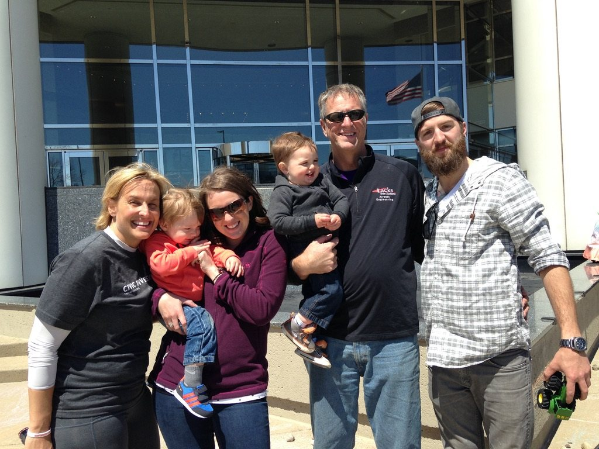
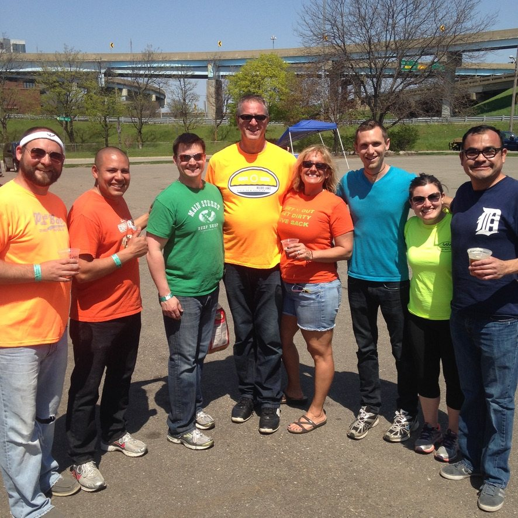
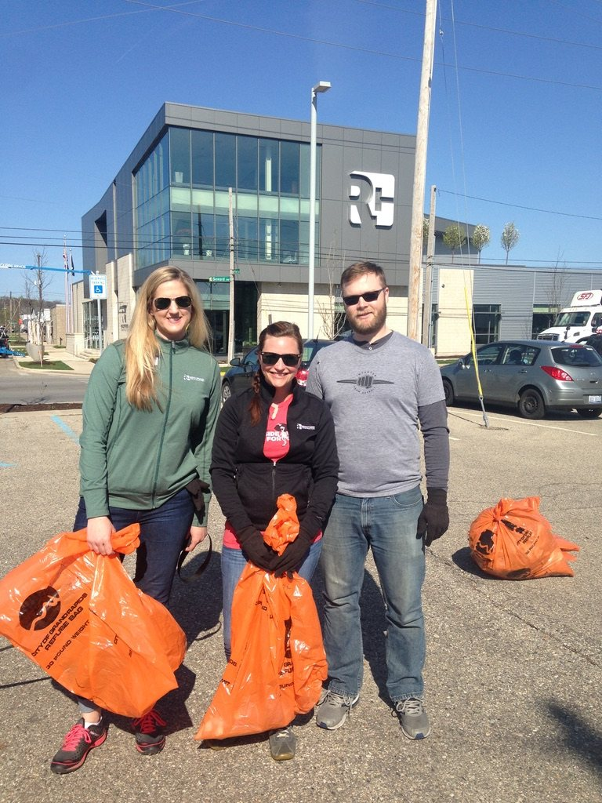
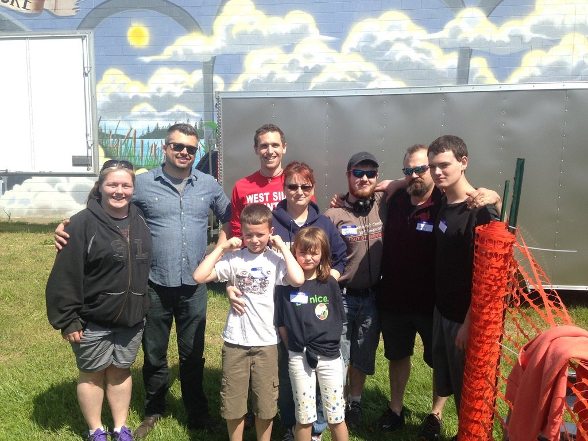
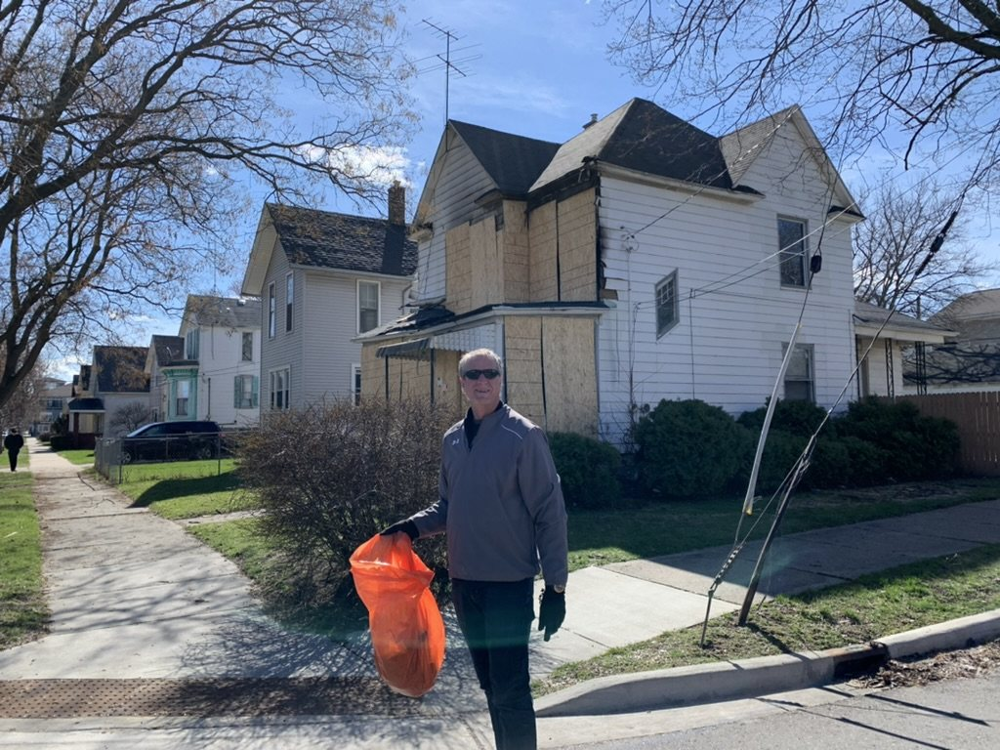
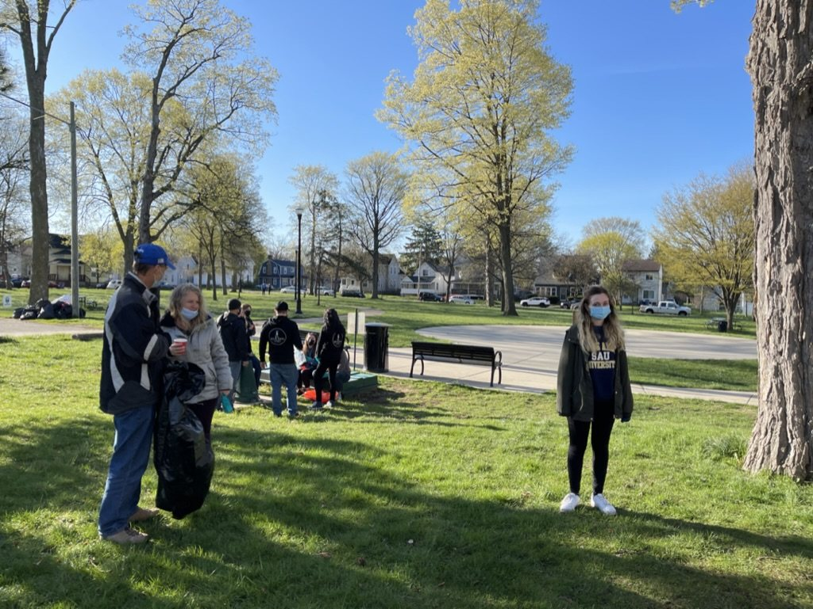
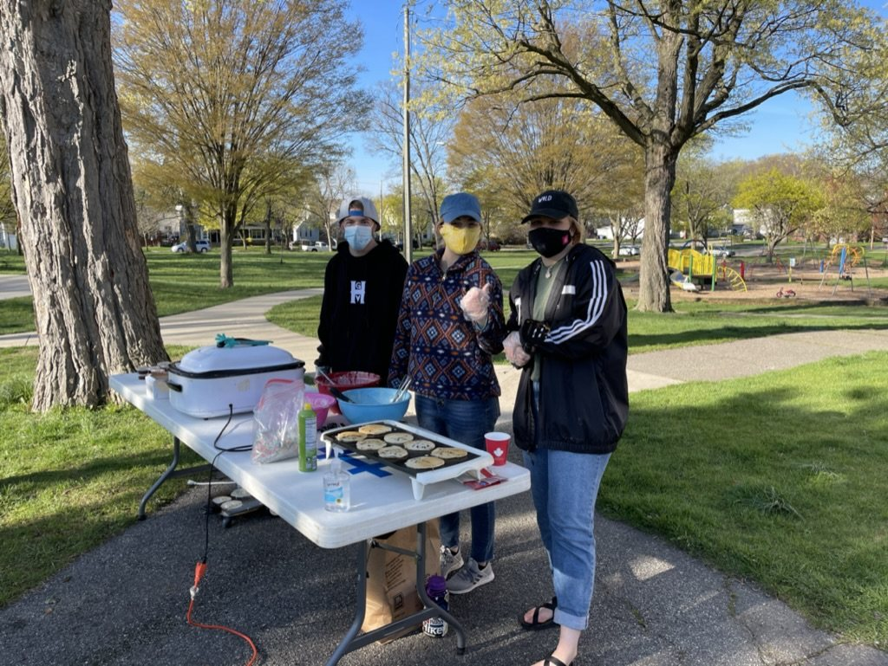
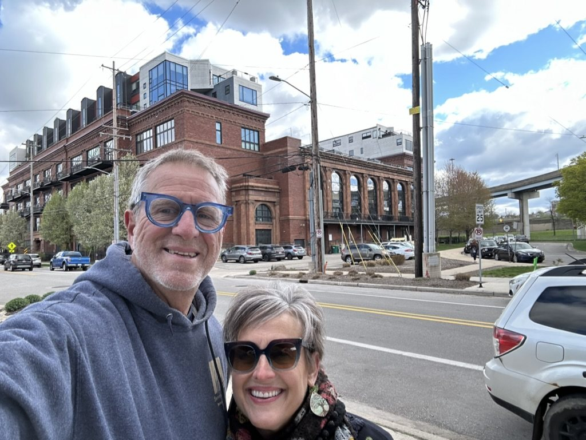
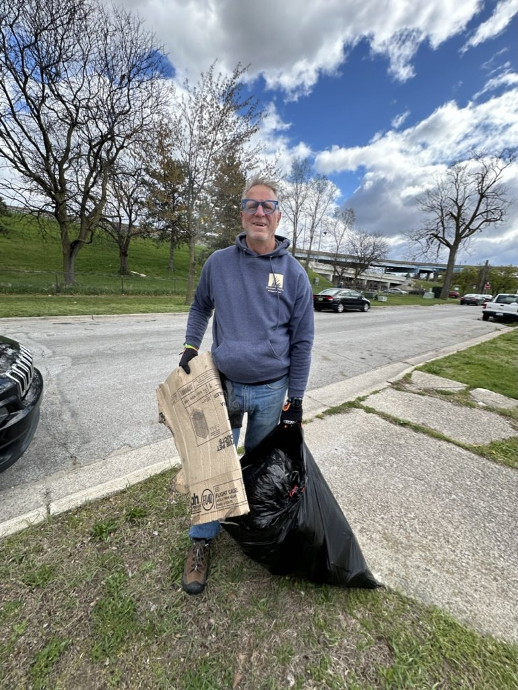

Started at Union Square, 2009
The West Side Community Clean Up
It began with two people dating, walking the block with trash bags. It grew into an annual spring Saturday with 200+ volunteers, now carried on by the West Grand Neighborhood Organization as the City Wide Clean Up.















